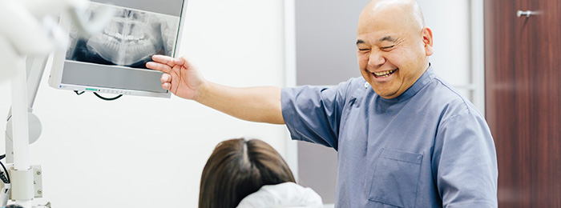
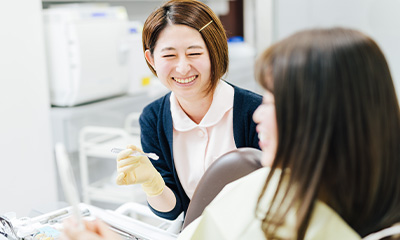
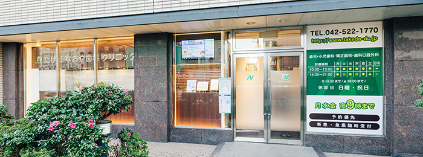
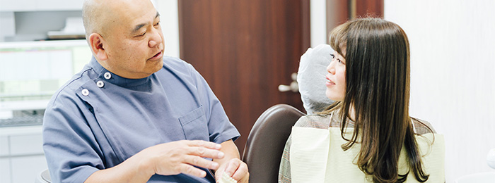
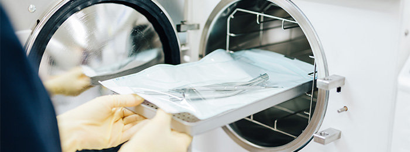
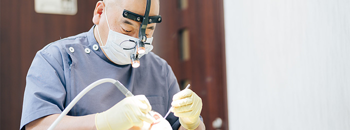

- 立川の歯医者「たけだなおや歯科クリニック」TOP
- コンセプト
立川駅から歩いて5分。「たけだなおや歯科クリニック」は通勤・通学・お出かけのついでにも通いやすい歯医者です。夜間診療・土曜診療にも対応。こちらでは当院の診療コンセプトをご紹介しております。
予防中心の診療で、責任を持ってお口の健康をサポート

私たちは歯科医院ですから、「歯を治療する」ことが仕事です。でも、それだけでは患者さんのお口の健康を本当に守ることにはつながりません。大事なのは患者さん目線で考え、患者さんの本当の望みを汲みとって提案することだと考えています。
どれだけ素晴らしい治療でも「できれば受けたくない」というのが患者さんの本音ではないでしょうか。だから、当院では予防中心の診療を行っています。しっかり予防していけば、我慢して治療を受けずに済みます。もし虫歯や歯周病になっても、早く気づけばそれだけ軽い治療で済むのです。

そしてどんな治療をしても、最終的に大事なのはその後のケアと定期的なチェック。それが再発防止や治療の長持ちにつながっていきます。立川のみなさんの豊かな生活をサポートし、いつまでも健康なお口を保っていただきたい。それが当院の想いです。そのために早期受診の大切さ、定期的なお口のチェックの大切さからきちんとご説明し、予防のお手伝いをしています。嬉しいことに当院には、高い予防意識を持って通ってくださる患者さんが多数。何でも話しやすい環境を整えてお待ちしていますので、困ったことがあればいつでも、お気軽に相談にいらしてください。
地域のみなさまに、安心して無理なく通っていただくために
お出かけや通勤・通学のついでにも通える！

当院は立川駅から徒歩5分、非常にアクセスの良い場所にあります。夜間診療や土曜診療にも対応。月・水・金は夜9時まで診療を行っています。お仕事や学校が終わってからでも、慌てずに来ていただけます。
また、話しやすいドクターやスタッフが集まっているため、患者さんにとってもきっといろいろ相談しやすい環境だと思います。お子さんからご年配の方まで、みなさんにとってわかりやすいご説明を心がけておりますので、楽な気持ちでご来院ください。
一人でも多くの方に、保険診療内でも最良の提案を

当院では一人でも多くの方に、ご自身にとって最適な治療を受けていただけるよう、保険診療を中心に治療のご提案をしています。「保険内だから」ではなく、「保険内でも」しっかりとお悩みを解決するために、最良の道を一緒に考えご提案いたします。
たとえば「費用を抑えたい」「見た目を重視したい」など、患者さんのご要望・ご事情はさまざまです。まずはそこから丁寧にお話をうかがい、そのとき、その方にとっての最優先事項は何か？を把握した上で、治療法をお伝えします。もちろん、ご要望に応じて自費診療の治療プランもお選びいただけるなど、幅広い選択肢をご用意しております。
安心・安全の治療を支える「衛生管理の徹底」

歯医者は医療施設ですから、感染症の原因になるようなことがあってはいけません。患者さんの健康をお守りするのが私たちの役目ですから、安全で清潔な環境を整えることは大前提です。当院では当たり前のこととして、衛生管理を徹底。タービン（歯を削る機器）は患者さんごと交換し、世界最高水準をクリアしたクラスB滅菌器で滅菌しています。
さらに、こうした使用機器の衛生管理に加えて、医院全体の清潔感にも十分に配慮し、ゴミが落ちていないか？空気はキレイか？と常にアンテナを張って、安心して過ごせる空間づくりに努めています。
痛みとダメージを最小限に抑えて、患者さんの負担を軽減

当院では、患者さんの歯を残すことを大切に考え、予防から治療までサポートしています。そのため、できるだけ歯を「削らない」「神経を取らずに済む」治療をご提案しています。苦手な方が多い麻酔についても、麻酔液を体温程度に温めることで痛みを軽減。麻酔針を刺すときも、できるだけ痛みを感じにくい角度・方法で行います。電動麻酔器もありますが、ドクターの手で注射した方が痛みが少なく、時間もかからないとご希望の患者さんもいらっしゃします。
そして、予防中心の診療で早期発見・早期治療をサポート。患者さんの痛みやダメージが最小限で済む方法を常に考えています。